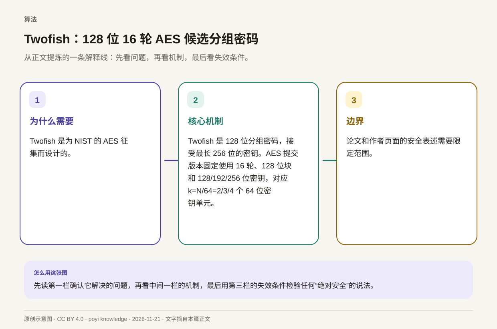
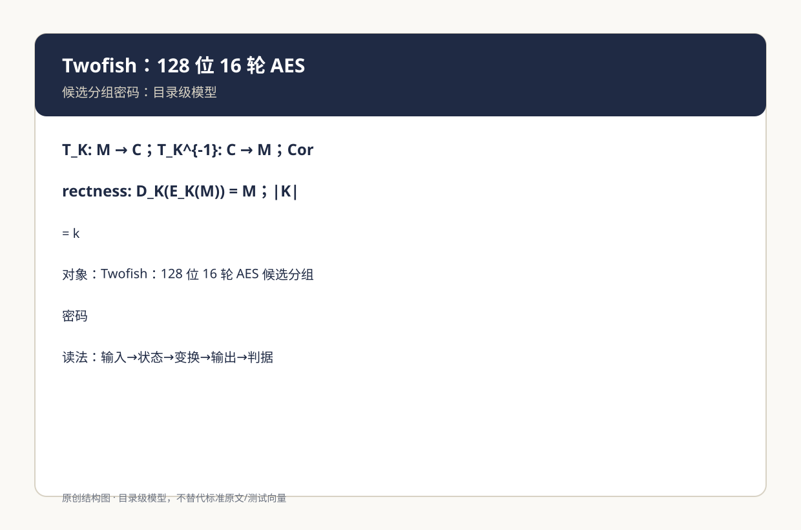

原理与机制
算法：Twofish 分组密码（Twofish）。Twofish 是 128 位分组密码，接受最长 256 位的密钥。AES 提交版本固定使用 16 轮、128 位块和 128/192/256 位密钥，对应 k=N/64=2/3/4 个 64 位密钥单元。它被描述为 16 轮 Feistel 类网络：轮函数 F 是双射，四个 8 位到 8 位的密钥相关 S-box 与一个固定的 4×4 MDS 矩阵构成 g 函数，两个 g 的输出经过伪 Hadamard 变换（PHT），再加上轮密钥。除两个 1 位旋转外，结构是 Feistel 式的；这两个旋转正是 Twofish 与纯 Feistel 网络的差别。128 位明文按小端序装入四个 32 位字 P0..P3，先与 K0..K3 异或做输入白化：
R_{0,i} = P_i XOR K_i i = 0..3
(F_{r,0}, F_{r,1}) = F(R_{r,0}, R_{r,1}, r)
R_{r+1,0} = ROR(R_{r,2} XOR F_{r,0}, 1)
R_{r+1,1} = ROL(R_{r,3}, 1) XOR F_{r,1}
R_{r+1,2} = R_{r,0}
R_{r+1,3} = R_{r,1}
16 轮后撤销最后一轮的左右交换，再做输出白化：
C_i = R_{16,(i+2) mod 4} XOR K_{i+4} i = 0..3
F 函数先对 R0 做 g，再把 R1 循环左移 8 位后做 g，然后做 PHT 并加两个轮密钥：
T0 = g(R_{r,0})
T1 = g(ROL(R_{r,1}, 8))
F_{r,0} = (T0 + T1 + K_{2r+8}) mod 2^32
F_{r,1} = (T0 + 2*T1 + K_{2r+9}) mod 2^32
g 把 32 位字拆成四个字节，分别通过四个密钥相关 S-box，再把四个结果视为 GF(2^8) 上的向量，乘以固定的 MDS 矩阵。GF(2^8) 用多项式 v(x)=x^8+x^6+x^5+x^3+1（0x169）表示，矩阵为：
MDS =
[ 01 EF 5B 5B ]
[ 5B EF EF 01 ]
[ EF 5B 01 EF ]
[ EF 01 EF 5B ]
密钥调度先定义 h(X, L)。h 把 X 和列表 L 的每个字都拆成字节；k=4 时先用 q1、q0、q0、q1 与 L3 混合，k>=3 时再用 q1、q1、q0、q0 与 L2 混合，最后总是用 L1、L0 和 q1/q0 的复合完成：
y0 = q1[q0[q0[x0] XOR l1,0] XOR l0,0]
y1 = q0[q0[q1[x1] XOR l1,1] XOR l0,1]
y2 = q1[q1[q0[x2] XOR l1,2] XOR l0,2]
y3 = q0[q1[q1[x3] XOR l1,3] XOR l0,3]
随后把 y0..y3 乘以同一个 MDS 矩阵，得到 h 的输出。k=4 的 L3 阶段和 k>=3 的 L2 阶段作用在 x 上，k=2 时直接从 x 进入最后的 L1/L0 阶段。密钥相关 S-box 就是 g(X)=h(X,S)，其中 S 来自密钥的 RS 编码。密钥字节先按 4 字节一组装成 2k 个 32 位字 M0..M(2k-1)（小端）。偶数下标的字组成 Me，奇数下标的字组成 Mo。每 8 个密钥字节再用 RS 矩阵（GF(2^8) 的多项式 w(x)=x^8+x^6+x^3+x^2+1，即 0x14D）编码成 4 字节，装成字 S_i；S 列表按逆序排列：
S = (S_{k-1}, S_{k-2}, ..., S_0)
rho = 2^24 + 2^16 + 2^8 + 1 = 0x01010101
A_i = h(2i*rho, Me)
B_i = ROL(h((2i+1)*rho, Mo), 8)
K_{2i} = (A_i + B_i) mod 2^32
K_{2i+1} = ROL((A_i + 2*B_i) mod 2^32, 9)
i 取 0..19，产生 40 个扩展密钥字。rho 的作用是让 i*rho 的四个字节都等于 i，因此 h 的输入字节是 2i 或 2i+1。固定置换 q0 和 q1 各由四个 4 位 S-box 构成。对输入字节 x：
a0 = x >> 4; b0 = x AND 15
a1 = a0 XOR b0
b1 = a0 XOR ROR4(b0, 1) XOR ((8*a0) AND 15)
a2 = t0[a1]; b2 = t1[b1]
a3 = a2 XOR b2
b3 = a2 XOR ROR4(b2, 1) XOR ((8*a2) AND 15)
a4 = t2[a3]; b4 = t3[b3]
y = 16*b4 + a4
t0 = 8 1 7 D 6 F 3 2 0 B 5 9 E C A 4
t1 = E C B 8 1 2 3 5 F 4 A 6 7 0 9 D
t2 = B A 5 E 6 D 9 0 C 8 F 3 2 4 7 1
t3 = D 7 F 4 1 2 6 E 9 B 3 0 8 5 C A
t0 = 2 8 B D F 7 6 E 3 1 9 4 0 A C 5
t1 = 1 E 2 B 4 C 3 7 6 D A 5 F 9 0 8
t2 = 4 C 7 5 1 6 9 A 0 E D 8 2 B 3 F
t3 = B 9 5 1 C 3 D E 6 4 7 F 2 0 8 A
提交论文指出 q0 有 1 个不动点，q1 有 2 个不动点。本文的实现从上述八张 4 位表重建两个 256 字节置换，并逐一检查双射性和不动点数量。Twofish 的字节序是小端：16 个明文字节按顺序进入四个 32 位字的最低到最高字节，密钥和输出也按同一约定。若对非零块或密钥按大端解析，结果会不同；全零向量不受字节序影响。短于 256 位的密钥在末尾补零到下一个已定义长度（例如 80 位密钥补到 128 位），而不是截断或重复。解密是加密的逆过程。先撤销输出白化并恢复 R16：
R_{16,0} = C_2 XOR K_6
R_{16,1} = C_3 XOR K_7
R_{16,2} = C_0 XOR K_4
R_{16,3} = C_1 XOR K_5
(F0, F1) = F(R_{r+1,2}, R_{r+1,3}, r)
R_{r,0} = R_{r+1,2}
R_{r,1} = R_{r+1,3}
R_{r,2} = ROL(R_{r+1,0}, 1) XOR F0
R_{r,3} = ROR(R_{r+1,1} XOR F1, 1)
最后 P_i = R_{0,i} XOR K_i。输入白化和输出白化都不改变分组密码的密码学结构，但能让攻击者无法直接看到第一轮和最后一轮的内部状态。

为什么重要
Twofish 是为 NIST 的 AES 征集而设计的。论文列出的目标包括 128 位块、128/192/256 位密钥、无弱密钥、在 Pentium Pro 等 32 位处理器上高效、在 8 位智能卡和专用硬件上可实现、设计简单、支持流密码/哈希/MAC 等模式，以及可接受最多 256 位的任意密钥长度。设计者还给出具体的性能目标：在 Pentium/Pentium Pro/Pentium II 上完全优化版本每块少于 500 周期，在只有 64 字节 RAM 的 8 位微处理器上可运行，硬件少于 20000 门。论文摘要报告的三组 1998 年数据是：完全优化的 Pentium Pro 实现每字节 17.8 周期，8 位智能卡实现每字节 1660 周期，硬件约 14000 门。这些是当时设计和实现的结果，不是今天任何平台的性能承诺。Twofish 的结构允许在密钥调度上做不同权衡：可以预计算全部子密钥以换取加密速度，也可以在内存受限时按需计算。论文第 12 节说明，保留目标块上的 1 位旋转主要是为了降低任何基于字节边界的攻击的可行性；这一设计选择同时考虑了性能和密码分析。安全评估方面，论文称设计者做了大量密码分析，他们最好的攻击能突破 5 轮 Twofish，使用 2^22.5 个选择明文和 2^51 的工作量；完整 16 轮没有被同样的分析突破。作者页面进一步称「Currently there is no successful cryptanalysis of Twofish.」（目前没有对 Twofish 的成功密码分析）。这是设计者维护的页面自身带元数据日期（发布于 2015-12-10、修改于 2022-11-07），页内也把它称为最佳的攻击注明为 2000 年（Shiho Moriai 与 Yiquin Lisa Yin）；但这仍是设计者一方的声明，不是独立第三方对全部攻击模型的证明，也不是对未来的保证，页面同样没给出可供独立复现的条件。论文第 8 节还讨论了差分、线性、插值、部分密钥猜测、相关密钥、侧信道和故障分析；这些分析针对简化轮数或特定条件，不能简单外推成绝对安全。Twofish 是五种 AES 最终候选之一，但没有被选为 AES。作者页面称 Twofish 不受专利限制，源代码不受版权限制且许可自由，可用于所有用途；这些是设计者/维护者的声明，使用前仍应核对具体代码和许可文本。AES 的最终标准是 FIPS 197，只规定 Rijndael；Twofish 不在该标准中。从教学角度看，Twofish 的价值在于把几个独立构件组合起来：密钥相关的 8 位 S-box、GF(2^8) 上的 MDS 矩阵、PHT、1 位旋转、输入/输出白化，以及一个比数据路径更复杂的密钥调度。它适合用来练习一件事：规范中的字节序、矩阵多项式、密钥扩展和中间值必须逐项对齐，而不是只验证自己加密后还能解密。
应用与实例
提交论文附录 A.1 给出三组完整中间值，分别对应 128 位全零密钥、192 位密钥 0123456789ABCDEFFEDCBA98765432100011223344556677 和 256 位密钥 0123456789ABCDEFFEDCBA987654321000112233445566778899AABBCCDDEEFF。正文的明文都是全零。128 位组的扩展密钥字 K0..K9 与 K38..K39 是：
K0..K7 = 52C54DDE 11F0626D 7CAC9D4A 4D1B4AAA
B7B83A10 1E7D0BEB EE9C341F CFE14BE4
K8..K9 = F98FFEF9 9C5B3C17
K38..K39 = F298311E 696EA672
该组的中间状态从输入白化 R[0]=52C54DDE 11F0626D 7CAC9D4A 4D1B4AAA 开始，第 1 轮得到 t0=C06D4949、t1=41B9BFC1，R[1]=52C54DDE 11F0626D C38DCAA4 7A0A91B6；经过 16 轮和输出白化，最终密文是 9F589F5CF6122C32B6BFEC2F2AE8C35A。192 位组的密文是 CFD1D2E5A9BE9CDF501F13B892BD2248，256 位组是 37527BE0052334B89F0CFCCAE87CFA20。附录 A.2 给出链式已知答案测试：从第 2 条起，每条明文是上一条密文；从第 3 条起，密钥由往前第 2 条（必要时第 3 条）密文按密钥长度截断或补零拼接。论文按 128/192/256 位分别列出 49 条，但只印出部分条目。本文复现了每组的第 1 至 10 条以及第 48、49 条，例如：
128 位，第 1 条：
K = 00000000000000000000000000000000
P = 00000000000000000000000000000000
C = 9F589F5CF6122C32B6BFEC2F2AE8C35A
128 位，第 3 条：
K = 9F589F5CF6122C32B6BFEC2F2AE8C35A
P = D491DB16E7B1C39E86CB086B789F5419
C = 019F9809DE1711858FAAC3A3BA20FBC3
192 位，第 1 条：
K = 000000000000000000000000000000000000000000000000
P = 00000000000000000000000000000000
C = EFA71F788965BD4453F860178FC19101
256 位，第 1 条：
K = 0000000000000000000000000000000000000000000000000000000000000000
P = 00000000000000000000000000000000
C = 57FF739D4DC92C1BD7FC01700CC8216F
这些向量覆盖三种密钥长度、零与非零密钥、零与非零明文，以及连续状态之间的链式关系。它们不是加密后能解密的自洽测试，而是与提交论文印出的固定答案逐字比对。Linux 内核的 CryptoAPI 包含一个 Twofish 实现（crypto/twofish_generic.c）。该文件头说明它是按提交论文写的 clean-room 实现，最初来自 GPG 代码，后来移植到内核 CryptoAPI。这说明 Twofish 作为一种可用的分组密码存在于通用操作系统的加密接口中；它不说明内核把 Twofish 当作推荐算法，也不说明任何协议标准采纳了它。

边界与攻击面
论文和作者页面的安全表述需要限定范围。论文第 8 节的分析包括差分、线性、插值、部分密钥猜测、相关密钥、侧信道和故障分析；摘要中「our best attack breaks 5 rounds」（最好的攻击突破 5 轮）是一个简化轮数结果，不是对 16 轮 Twofish 的破解。作者页面称目前没有对 Twofish 的成功密码分析，这是设计者维护页面的声明，没有给出独立复现条件，不能当作形式化证明。本文不复述未经核实的第三方攻击论文来宣称 Twofish 已被攻破或绝对安全。实现层面，Twofish 的密钥相关 S-box 和 MDS 乘法通常用查表加速。查表会带来缓存和时序侧信道风险；论文第 8.9 节把侧信道和故障分析列为需要单独考虑的攻击类别。本文的教学实现使用普通数组和 JavaScript 位运算，不是常量时间实现，也没有掩码、密钥隔离或故障检测，不能用于保护真实数据。密钥调度比数据路径更复杂：需要 RS 编码、h 函数、40 个扩展密钥字和最多 4 个密钥相关 S-box。这带来实现成本和出错面，但复杂本身不等于安全缺陷；论文用它来支持预计算与按需计算的多种权衡，也用它避免简单密钥调度可能带来的部分密钥猜测和相关密钥弱点。本文的向量验证只覆盖固定密钥下的已知答案，不评估密钥调度的全部密码学性质。部署范围也需要区分。FIPS 197 只规定 AES（Rijndael），Twofish 不是 FIPS 197 算法；Linux 内核对 Twofish 的支持是可用实现，不是标准采纳或安全推荐。Twofish 只定义分组密码，不提供工作模式、IV 管理、填充、完整性保护、密钥协商或侧信道防护；这些必须由协议层和实现层另行处理。最后，本文的 36 条链式向量和 3 组中间值全部来自同一份提交论文附录。它们能强有力地检查实现是否与规范一致，但不能证明 Twofish 对选择明文、相关密钥、侧信道或其他攻击的安全性。固定向量通过不等于密码分析完成。
历史与背景
Twofish 由 Bruce Schneier、John Kelsey、Doug Whiting、David Wagner、Chris Hall 和 Niels Ferguson 设计，论文标注日期为 1998 年 6 月 15 日，作为 NIST AES 选择过程的提交。论文第 1 节说明 NIST 在 1997 年宣布 AES 计划、公开征集算法，目标是选出一个替代 DES 的新标准；Twofish 是应征方案之一。论文第 12 节说明了 Twofish 与 Blowfish 的渊源，原文写「Twofish originated from an attempt to take the original Blowfish design and modify it for a 128-bit block.」，即起源于把原 Blowfish 设计改造成 128 位块的尝试。设计者希望保留 Blowfish 的速度和良好扩散，同时让 F 函数成为双射、密钥调度更高效、表更小，从而可以用于智能卡和定制硬件，并尽可能比 Blowfish 更快。这个历史关系是设计渊源，不表示 Twofish 与 Blowfish 可以互相替代，也不表示学习 Blowfish 是使用 Twofish 的前提。NIST 宣布的五种 AES 最终候选是 MARS、RC6、Rijndael、Serpent 和 Twofish。Twofish 没有被选为 AES；NIST 最终选择 Rijndael，并在 2001 年 11 月 26 日发布 FIPS 197。FIPS 197 在 2023 年 5 月 9 日更新为 FIPS 197-upd1；更新不改变 Twofish 未被选为 AES 的事实。作者页面称 Twofish 不受专利限制，源代码不受版权限制且许可自由；页面还称目前没有对 Twofish 的成功密码分析。前者需要以具体代码和许可文本为准，后者是设计者声明而非独立证明。Twofish 后来出现在 Linux 内核的 CryptoAPI 中，但它不是 AES 标准，也没有取代 AES 的标准化地位。
逐步示例与核验
复算示例
取标准或公开测试向量中的一组参数，按“输入—执行—输出”记录：先写出该条目的形式式 (C=E_K(P;r),\qquad P=D_K(C))；再按规范顺序执行每一步，最后把输出与独立实现或标准向量逐字节对照。若没有可引用的数值向量，就只记录结构步骤，不伪造输出。
参考出处
- Wikipedia search entry for Twofish 分组密码. https://zh.wikipedia.org/w/index.php?search=Twofish%20%E5%88%86%E7%BB%84%E5%AF%86%E7%A0%81
- Handbook of Applied Cryptography (Menezes, van Oorschot, Vanstone). https://www.cacr.math.uwaterloo.ca/hac/